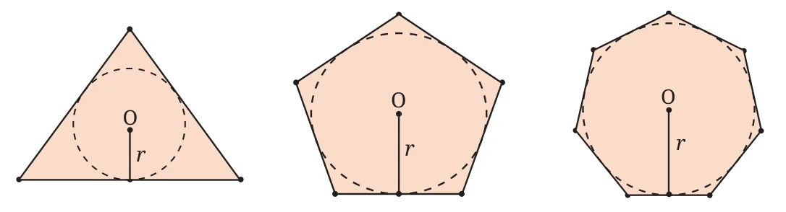

A circle is an extremely basic shape; it is easy to draw if we have a rope and a peg to which the rope can be tied. Human beings have used the circular shape in their settlements, buildings and tools for thousands of years.
Think and Reflect
Why were human beings so fond of using circular shapes? Was this only for practical reasons, or could there have been other reasons too? What kinds of uses have human beings found for the circular shape?
Early on, human beings faced the challenge of finding the area \(A\) enclosed by a circle. They may have needed, for example, to work out how much grain can be kept in a cylindrical tower (which has a circular cross section), or how much area is occupied by a circular garden or a circular building. They needed such data for planning out their cities, for tax purposes, etc.
Early societies understood very well that the area \(A\) must be proportional to the square of the circumference \(C\). Let’s see why this is so.
- Suppose we are given a square. Let its side be \(a\). It has perimeter \(P = 4a\) and area \(A = a^2\). So the ratio \(P^2 : A = (4a^2) : a^2 = 16a^2 : a^2 = 16 : 1\). So the ratio \(P^2 : A\) is \(16 : 1\) for all squares; the ratio does not depend on the size of the square — it is the same for all squares.
- Consider an equilateral triangle with side \(a\). Its perimeter is \(P = 3a\) and its area is \(A = \frac{\sqrt{3}}{4} a^2\). So \(P^2 : A = (3a)^2 : \frac{\sqrt{3}}{4} a^2 = 9a^2 : \frac{\sqrt{3}}{4} a^2 = 36 : \sqrt{3}\).
So the ratio \(P^2 : A\) is \(36 : \sqrt{3}\) for all equilateral triangles; the ratio does not depend on the size of the equilateral triangle — it is the same for all equilateral triangles.
- Similarly, for various shapes, as we change the scale, the ratio \(P^2 : A\) stays fixed. The value of the ratio depends only on the shape, not on its scale.
Such reasoning suggests that for a circle too, if \(C =\) circumference and \(A =\) area, the ratio \(C^2 : A\) must be some fixed constant. But what is this constant?
Well before 1500 BCE, the Babylonians had found through actual measurement that the constant is close to 12; that is, \(C^2 : A \approx 12 : 1\). So, their formula for the area of a circle was \(A \approx \frac{C^2}{12}\).
Around 1500 BCE, the ancient Egyptians came up with another such formula which resembles the one described above but is much more accurate: \(A \approx \left(\frac{8d}{9}\right)^2\) where \(d\) is the diameter of the circle. Since \(d = 2r\), this may also be written as \(A \approx \left(\frac{64}{81}\right) 4r^2\), i.e., \(A \approx \left(\frac{256}{81}\right) r^2\).
Amazingly, the same formula appears in the Baudhāyana Śhulbasūtra (800 BCE) via a geometric method for constructing a square with (approximately) the same area as a circle.
The Familiar Formula in Use Today
The ancient Greeks also knew that \(\frac{A}{r^2}\) is some constant — but did not know what that constant was. Two different civilisations approximated it to be \(\frac{256}{81}\).
Finally, in c. 250 BCE, Archimedes showed that the constant is exactly \(\pi\) (i.e., the same constant that occurs in the formula for perimeter of a circle!); so, \(A = \pi r^2\). He expressed the formula this way: “The area of a circle is equal to the area of a right angle triangle with sides equal to the radius and the circumference of the circle”. That is,
\[\text{Area of circle} = \frac{1}{2} \times \text{circumference} \times \text{radius} = \frac{1}{2} \times 2\pi r \times r = \pi r^2.\]
The proof given by Archimedes is very clever. It is based on a property shared by all regular polygons: The area enclosed by a regular polygon is equal to half the perimeter \(\times\) the radius of the circle that fits tightly within the polygon (Fig. 6.36). (The proof of this formula is an extension of the proof of the formula of the area of a triangle in terms of the radius of its incircle.)

Archimedes did a ‘thought experiment’; he asked himself what happens if the number of sides of the regular polygon gets larger and larger. Working out the details, he arrived at the result \(A = \pi r^2\).
Here perhaps is the most visual and easy-to-understand explanation for why the area of a circle of radius \(r\) has area \(\pi r^2\). This beautiful visual explanation for the area of the circle was first discovered by Nīlakaṇṭha Somayājī (c. 1500) in his commentary on the Āryabhaṭīya:

As the slices become smaller and smaller, the arcs in Fig. 6.37B become more and more closer to a line. This makes the figure more and more closer to a parallelogram with
base = half the circumference (why?) \(= \pi r\),
height = radius \(r\).
This gives a way to argue that the area of the circle is equal to the area of a parallelogram!
Area of the circle = Area of the parallelogram = base \(\times\) height \(= \pi r^2\).
6.10.1 Area of Sector of a Circle
A sector of a circle is the region bounded by an arc and the two radii containing the endpoints of the arc.

The area within a sector of a circle may be found the same way that we found the length of a circular arc. Examine Fig. 6.39 and Fig. 6.40.

By symmetry, we see that the area of a semicircular disc is \(\left(\frac{180}{360}\right)^{\text{th}} = \frac{1}{2}\) of the area of the circle, i.e., \(\frac{1}{2}\pi r^2\).
We could use the reflection symmetry of the circle to understand this result.

By symmetry, we see that the area of a quarter circular disc is \(\left(\frac{90}{360}\right)^{\text{th}} = \frac{1}{4}\) of the area of the circle, i.e., \(\frac{1}{4}\pi r^2\).
We could also use the quarter-turn symmetry of the circle to understand this result.
Examining the above, we immediately obtain the desired formula for a general sector:
Formula for the area of a sector of a disc in terms of the angle it subtends at the centre of the circle
If the arc is AB, and it subtends an angle of \(\theta^{\circ}\) at the centre O of the circle (see Fig. 6.38), then the area of the sector is
\[\pi r^2 \times \frac{\theta^{\circ}}{360^{\circ}}.\]
Note how we have used the rotational symmetry of a circle in deducing these formulas.
Related to a sector, there is a part of the circular region called a segment. A segment of a circle is the region bounded by an arc of the circle and the chord joining the endpoints of the arc.